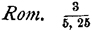
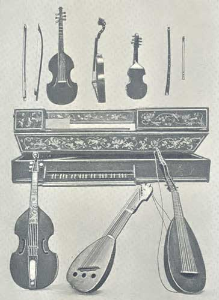

LONDON
J.M. DENT & CO., ALDINE HOUSE, E.C.
1896
All rights reserved.
Transcriber's Notes
1. The original text uses a "fraction" format for citations to Shakespeare's plays, e.g.:

For clarity, in this e-text the "fractions" have been converted to a one-line citation, e.g., Rom. III, v, 25 (signifying Act III, scene v, line 25). Where the original does not use the fraction format, the citation style has not been altered.
2. The original text sometimes misspells "Passamezzo" as "Passemezzo" and "viol da gamba" as "viol de gamba." These have been corrected in this e-text.
3. The original text inconsistently uses a breve over the e in "Parthenia" and "Passameso." For clarity, the breve has been removed in this e-text, as it is not part of the usual spelling of these words, and has in fact been omitted from the 1931 revised edition of the book.
4. The music images and sound files in this e-text were created using Finale Allegro 2005. The original text occasionally uses old-style symbols for time signatures and rests; these have been modernized in the images.
This book contains little that is not tolerably well known both to Shakespeare scholars and musicians who have any acquaintance with the history of music. It is hoped that it may be of some use to a large class of students of Shakespeare who have no opportunity to gather up the general information which will be found here. The author also ventures to believe that some brother musicians will be gratified to see at one view what a liberal treatment the great Poet has given to our noble art. It will be observed that settings of Shakespearian Songs of a later date than the generation immediately succeeding Shakespeare's death are not noticed. The large number of settings of the 18th century, by such men as Arne, though interesting musically, have nothing whatever to do with the student of Shakespeare and the circumstances of his time. It can only be regretted that so much of the original music seems to have perished.
The author is greatly indebted to Mr Aldis Wright, who has kindly looked through the work in MS., and contributed one or two interesting notes, which are acknowledged in the proper place.
London, March 1896.

[I am indebted for the arrangement of this picture to the kindness of the authorities at South Kensington Museum, where all these instruments may be found, except the Pipe and Cornet, which belong to my friend, Mr W.F.H. Blandford.]
In the middle, on table.
Queen Elizabeth's 'Virginal.' Date, latter half of 16th century. Outside of case (not visible in picture) covered with red velvet. Inside finely decorated. Has three locks. Is more properly a Spinet, the case not being square, but of the usual Spinet shape—viz., one long side (front view), and four shorter ones forming a rough semi-circle at back.
Top row, counting from the right.
1. Tabor-pipe. Modern, but similar to the Elizabethan instrument. French name, 'galoubet.' Merely a whistle, cylindrical bore, and 3 holes, two in front, one (for thumb) behind. The scale is produced on the basis of the 1st harmonic—thus 3 holes are sufficient. It was played with left hand only, the tabor being hung to the left wrist, and beaten with a stick in the right hand. Length over all of pipe in picture, 1 ft. 2-1/2 in.; speaking length, 1 ft. 1-1/8 in.; lowest note in use, B flat above treble staff. Mersennus (1648), however, says the tabor-pipe was in G, which makes it larger than the one in the picture. A contemporary woodcut (in Calmour's 'Fact and Fiction about Shakespeare') of William Kemp, one of Shakespeare's fellow-actors, dancing the Morris, to tabor and pipe, makes the pipe as long as from mouth to waist—viz., about 18 inches, which agrees with Mersennus. A similar woodcut in 'Orchésographie' makes the pipe even longer. Both represent pipe as conical, like oboe. The length of the tabor, in these two woodcuts, seems to be about 1 ft. 9 in., and the breadth, across the head, 9 or 10 in. No snare in the English woodcut, but the French one has a snare.
2. Cornet (treble), date 16th or 17th century. Tube slightly curved, external shape octagonal, bore conical. Cupped mouthpiece of horn, 6 holes, and one behind for thumb. Lowest note, A under treble staff.
3. Recorder. Large beak-flute of dark wood. Three joints, not including beak. The beak has a hole at the back, covered with a thin skin, which vibrates and gives a slight reediness to the tone. The usual 6 finger holes in front, a thumb hole behind, and a right-or-left little-finger hole in lowest joint.
4. Small French Treble Viol, 17th century. Back view, same shape as of all other viols of whatever size. 6 strings, 4 frets.
5. Treble Viol, as used in England and Italy; label inside—Andreas (?) Amati, Cremona, 1637. Side view, shews carved head and flat back. 6 strings, 4 frets, ivory nut.
6. Tenor Viol. English, late 17th century. Front view, shewing sloping shoulders. 6 strings, 7 frets, plain head.
7. Viol da Gamba Bow. Ancient shape. No screw. This shape in use later than 1756.
8. Violoncello Bow. Modern shape, with screw.
Bottom row, counting from left.
1. Bass Viol, or Viol da Gamba, or Division Viol. Italian, 1600. Carved head, inlaid fingerboard, carved and inlaid tailpiece. 6 strings, 7 frets.
2. Lute. Italian, 1580. Three plain holes in belly, obliquely. Ornamental back. Flat head. Pegs turned with key from behind. 12 strings—viz., 1 single (treble), 4 doubles, 1 single, and 2 singles off the fingerboard (basses). 10 frets.
3. Arch Lute. Italian, 17th century. 18 strings, 8 on lower neck, 10 on higher, off the fingerboard. The latter are 'basses,' and probably half of them duplicates. 7 frets on neck, 5 more on belly.
A principal character of the works of a very great author is, that in them each man can find that for which he seeks, and in a form which includes his own view.
With Shakespeare, as one of the greatest of the great, this is pre-eminently the case. One reader looks for simply dramatic interest, another for natural philosophy, and a third for morals, and each is more than satisfied with the treatment of his own special subject.
It is scarcely a matter of surprise, therefore, that the musical student should look in Shakespeare for music, and find it treated of from several points of view, completely and accurately.
This is the more satisfactory, as no subject in literature has been treated with greater scorn for accuracy, or general lack of real interest, than this of music.
This statement will admit of comparatively few exceptions, one of which must here be mentioned.
The author of "John Inglesant," Mr Shorthouse, whether he "crammed" his music or not, has in that book given a lively and quite accurate picture of the art as practised about Charles I.'s time.
There is no need here to name the many well-known writers who have spoken of music with a lofty disregard for facts and parade of ignorance which, displayed in any other matter, would have brought on them the just contempt of any reviewer.
The student of music in Shakespeare is bound to view the subject in two different ways, the first purely historical, the second (so to speak) psychological.
As for the first, the most superficial comparison of the plays alone, with the records of the practice and social position of the musical art in Elizabethan times, shews that Shakespeare is in every way a trustworthy guide in these matters; while, as for the second view, there are many most interesting passages which treat of music from the emotional standpoint, and which clearly shew his thorough personal appreciation of its higher and more spiritual qualities.
Hamlet tells us, and we believe, often without clearly understanding, that players are the abstracts and brief chronicles of the time, and that the end of playing, both at the first and now, was, and is, to hold the mirror up to nature, and to shew the very age and body of the time, his form and pressure.
The study of this one feature of the "age and body" of Shakespeare's time, with the view of clearly grasping the extreme accuracy of the "abstract and brief chronicle" to be found in his works, will surely go some way to give definiteness and force to our ideas of Shakespeare's magnificent grip of all other phases of thought and of action.
The argument recommends itself—"If he is trustworthy in this subject, he is trustworthy in all."
To a professional reader at all events, it argues very much indeed in a writer's favour, that the "layman" has managed to write the simplest sentence about a specialty, without some more or less serious blunder.
Finally, no Shakespeare student will deny that some general help is necessary, when Schmidt's admirable Lexicon commits itself to such a misleading statement as that a virginal is a kind of small pianoforte, and when a very distinguished Shakespeare scholar has allowed a definition of a viol as a six-stringed guitar to appear in print under his name.
Out of thirty-seven plays of Shakespeare, there are no less than thirty-two which contain interesting references to music and musical matters in the text itself. There are also over three hundred stage directions which are musical in their nature, and these occur in thirty-six out of thirty-seven plays.
The musical references in the text are most commonly found in the comedies, and are generally the occasion or instrument of word-quibbling and witticisms; while the musical stage directions belong chiefly to the tragedies, and are mostly of a military nature.
As it is indispensable that the student of Shakespeare and Music should have a clear idea of the social status and influence of music in Shakespearian times, here follows a short sketch of the history of this subject, which the reader is requested to peruse with the deliberate object of finding every detail confirmed in Shakespeare's works.
(Temp., 16th and 17th centuries.)
Morley, "Plain and Easy Introduction to Practical Music," 1597, pp. 1 and 2. Here we read of a dinner-party, or "banket," at which the conversation was entirely about music. Also—after supper—according to custom—"parts" were handed round by the hostess. Philomathes has to make many excuses as to his vocal inability, and finally is obliged to confess that he cannot sing at all. At this the rest of the company "wonder"—and some whisper to their neighbours, "How was he brought up?" Phil. is ashamed—and goes to seek Gnorimus the music-master. The master is surprised to see him—as Phil. has heretofore distinguished himself by inveighing against music as a "corrupter of good manners, and an allurement to vices." Phil.'s experience of the supper-party has so far changed his views that he wishes as soon as may be to change his character of Stoic for that of Pythagorean. Thereupon the master begins to teach him from the very beginning, "as though he were a child."
Then follows a long lesson—which is brought to an end by Philomathes giving farewell to the master as thus—"Sir, I thanke you, and meane so diligently to practise till our next meeting, that then I thinke I shall be able to render you a full account of all which you have told me, till the which time I wish you such contentment of mind and ease of body as you desire to yourselfe (Master's health had been very bad for long enough) or mothers use to wish to their children." The Master replies—"I thanke you: and assure your selfe it will not be the smallest part of my contentment to see my schollers go towardly forward in their studies, which I doubt not but you will doe, if you take but reasonable pains in practise."
Later on in the Third Part (p. 136) Phil.'s brother Polymathes comes with him to Gnorimus for a lesson in Descant—i.e., the art of extemporaneously adding a part to the written plainsong.[1] This brother had had lessons formerly from a master who carried a plainsong book in his pocket, and caused him to do the like; "and so walking in the fields, hee would sing the plaine song, and cause me to sing the descant, etc." Polymathes tells us also that his master had a friend, a descanter himself, who used often to drop in—but "never came in my maister's companie ... but they fell to contention.... What? (saith the one), you keepe not time in your proportions: you sing them false (saith the other), what proportion is this? (saith hee), sesqui-paltery (saith the other): nay (would the other say), you sing you know not what, it shoulde seeme you came latelie from a Barber's shop, where you had Gregory Walker (derisive name for 'quadrant pavan,' 'which was most common 'mongst the Barbars and Fidlers') or a curranta plaide in the new proportions by them lately found out, called sesqui-blinda, and sesqui-harken-after."
[These mocking terms, sesqui-paltery, sesqui-blinda, and sesqui-harken-after, are perversions of names of "proportions" used in the 16th century—as, sesqui-altera (3 equal notes against 2).]
We find, on p. 208, that both Philomathes and Polymathes are young University gentlemen—looking forward hereafter to be "admitted to the handling of the weightie affaires of the common wealth."
The lessons end with their request to the master to give them "some songes which may serve both to direct us in our compositions, and by singing them recreate us after our more serious studies."
Thus we find that in Elizabeth's reign it was the "custom" for a lady's guests to sing unaccompanied music from "parts," after supper; and that inability to take "a part" was liable to remark from the rest of the company, and indeed that such inability cast doubt on the person having any title to education at all.
We find that one music master was accustomed to have his gentleman pupils so constantly "in his company" that they would practise their singing while "walking in the fields."
Finally—that part-singing from written notes, and also the extempore singing of a second part (descant) to a written plainsong, was a diversion of such young University gentlemen, and was looked on as a proper form of recreation after hard reading.
In the 16th century music was considered an essential part of a clergyman's education. A letter from Sir John Harrington to Prince Henry (brother of Charles I.) about Dr John Still, Bishop of Bath and Wells in 1592, says that no one "could be admitted to primam tonsuram, except he could first bene le bene con bene can, as they called it, which is to read well, to conster [construe] well, and to sing well, in which last he hath good judgment." [The three bene's are of course le-gere, con-struere, can-tare.]
Also, according to Hawkins (History of Music, p. 367), the statutes of Trinity College, Cambridge, founded by Henry VIII., make part of the Examination of Candidates for Fellowships to be in "Quid in Cantando possint"; indeed, all members were supposed capable of singing a part in choir service.[2]
(Long before this, in 1463, Thomas Saintwix, doctor in music, was elected Master of King's College, Cambridge.)
Accordingly, we find Henry VIII., who, as a younger brother, was intended for the Church, and eventually for the See of Canterbury, was a good practical musician. Erasmus says he composed offices for the church. An anthem, "O Lord, the maker of all things," is ascribed to him; and Hawkins gives a motet in three parts by the king, "Quam pulchra es."
Chappell's Old English Popular Music gives a passage from a letter of Pasqualigo the Ambassador-extraordinary, dated about 1515, which says that Henry VIII. "plays well on the lute and virginals, sings from book at sight," etc. Also in Vol. I. are given two part-songs by the king, 'Pastyme with good companye' and 'Wherto shuld I expresse.'
A somewhat unclerical amusement of Henry VIII.'s is related by Sir John Harrington (temp. James I.). An old monkish rhyme, "The Blacke Saunctus, or Monkes Hymn to Saunte Satane," was set to music in a canon of three parts by Harrington's father (who had married a natural daughter of Henry VIII.); and King Henry was used "in pleasaunt moode to sing it." For the music and words, see Hawkins, pp. 921 and 922.
Anne Boleyn was an enthusiastic musician, and, according to Hawkins, "doted on the compositions of Jusquin and Mouton, and had collections of them made for the private practice of herself and her maiden companions."
It appears from the Diary of King Edward VI. that he was a musician, as he mentions playing on the lute before the French Ambassador as one of the several accomplishments which he displayed before that gentleman, July 19th, 1551.
There is also a letter from Queen Catherine (of Arragon), the mother of Queen Mary, in which she exhorts her "to use her virginals and lute, if she has any."
As for Elizabeth, there is abundant evidence that she was a good virginal player.
The best known MS. collection of virginal music (that in the Fitzwilliam Museum at Cambridge) has at least always been known as Queen Elizabeth's Virginal Book, and the following quaint story is quoted by Hawkins from Melvil's Memoirs (Lond. 1752).
"The same day, after dinner, my Lord of Hunsdean drew me up to a quiet gallery that I might hear some music (but he said he durst not avow it), where I might hear the queen play upon the virginals. After I had hearkened a while I took by [aside] the tapestry that hung before the door of the chamber, and stood a pretty space, hearing her play excellently well; but she left off immediately so soon as she turned her about and saw me. She appeared to be surprised to see me, and came forward, seeming to strike me with her hand, alledging she was not used to play before men, but when she was solitary to shun melancholy." [Queen Elizabeth's Virginal is in South Kensington Museum.]
To go on with the Royal musicians (who are interesting as such, because their habit must have set the fashion of the day), in James I.'s reign we find that Prince Charles learnt the Viol da Gamba from Coperario (i.e., John Cooper). Also Playford (temp. Charles II.) says of Charles I. that the king "often appointed the service and anthems himself" in the Royal Chapel; "and would play his part exactly well on the bass-violl,"—i.e., the viol da gamba.
George Herbert, who was by birth a courtier, found in music "his chiefest recreation," "and did himself compose many divine hymns and anthems, which he set and sung to his lute or viol.... His love to music was such, that he went usually twice every week ... to the cathedral church in Salisbury; and at his return would say that his time spent in prayer and cathedral music elevated his soul, and was his heaven upon earth." But not only was the poet-priest a lover of church music, for (Walton's Life goes on) "before his return thence to Bemerton, he would usually sing and play his part at an appointed private music meeting." This was fourteen years after Shakespeare's death.
Anthony Wood, who was at Oxford University in 1651, gives a most interesting account of the practice of chamber music for viols (and even violins, which, by Charles II.'s time, had superseded the feebler viols) in Oxford. In his Life, he mentions that "the gentlemen in privat meetings, which A.W. frequented, play'd three, four, and five Parts with Viols, as, Treble-Viol, Tenor, Counter-Tenor, and Bass, with an Organ, Virginal, or Harpsicon joyn'd with them: and they esteemed a Violin to be an Instrument only belonging to a common Fidler, and could not endure that it should come among them, for feare of making their Meetings to be vaine and fidling." Wood went to a weekly meeting of musicians in Oxford. Amongst those whom he names as "performing their parts" are four Fellows of New College, a Fellow of All Souls, who was "an admirable Lutenist," "Ralph Sheldon, Gent., a Rom. Catholick ... living in Halywell neare Oxon., admired for his smooth and admirable way in playing on the Viol," and a Master of Arts of Magdalen, who had a weekly meeting at his own college. Besides the amateurs, there were eight or nine professional musicians who frequented these meetings. This was in 1656, and in 1658 Wood gives the names of over sixteen other persons, with whom he used to play and sing, all of whom were Fellows of Colleges, Masters of Arts, or at least members of the University. Amongst them was "Thom. Ken of New Coll., a Junior" (afterwards Bishop Ken, one of the seven bishops who were deprived at the Revolution), who could "sing his part." All the rest played either viol, violin, organ, virginals, or harpsichord, or were "songsters."
"These did frequent the Weekly Meetings, and by the help of public Masters of Musick, who were mixed with them, they were much improved."
There seems to have been little that was not pure enjoyment in these meetings. Only two persons out of the thirty-two mentioned seem to have had any undesirable quality—viz., Mr Low, organist of Christ Church, who was "a proud man," and "could not endure any common Musitian to come to the meeting;" and "Nathan. Crew, M.A., Fellow of Linc. Coll., a Violinist and Violist, but alwaies played out of Tune." This last gentleman was afterwards Bishop of Durham.
Thus we find that in the 16th and 17th centuries a practical acquaintance with music was a regular part of the education of both sovereign, gentlemen of rank, and the higher middle class.
We find Henry VIII. composing church music, and at the same time enjoying himself singing in the three-part canon composed by his friend, a gentleman of rank.
We find that a Fellow of Trinity at the same time was expected to sing "his part" in chapel as a matter of course. We find Edward VI., Mary, and Elizabeth to have all been capable players on lute or virginals. We find that it was the merest qualification that an Elizabethan bishop should be able to sing well; and that young University gentlemen of birth thought it nothing out of the way to learn all the mysteries of both prick-song (a written part) and descant (an extempore counterpoint), and to solace their weary hours by singing "in parts."
Immediately after Shakespeare's time, we find a courtier of James I., and the ill-fated Prince Charles himself, both enthusiasts in both church and chamber music; and lastly, two years after the Regicide, we find the University of Oxford to have been a perfect hotbed of musical cultivation. Men who afterwards became Bishops, Archdeacons, Prebendaries, besides sixteen Fellows of Colleges, and sundry gentlemen of family, were not ashamed to practise chamber music and singing to an extent which really has no parallel whatever nowadays.
There is plenty of evidence, though more indirect in kind, that the lower classes were as enthusiastic about music as the higher. A large number of passages in contemporary authors shows clearly that singing in parts (especially of "catches") was a common amusement with blacksmiths, colliers, cloth-workers, cobblers, tinkers, watchmen, country parsons, and soldiers.
In Damon and Pithias, 1565, Grimme, the collier, sings "a bussing [buzzing] base," and two of his friends, Jack and Will, "quiddel upon it," i.e., they sing the tune and words, while he buzzes the burden.
Peele's Old Wives Tale, 1595, says, "This smith leads a life as merry as a king; Sirrah Frolic, I am sure you are not without some round or other; no doubt but Clunch [the smith] can bear his part."
Beaumont and Fletcher's Coxcomb has
| "Where were the watch the while? good sober gentlemen, They were, like careful members of the city, Drawing in diligent ale, and singing catches." |
Also in B. and F.'s Faithful Friends—
"Bell.—Shall's have a catch, my hearts?
Calve.—Aye, good lieutenant.
Black.—Methinks a soldier[3] should sing nothing else; catch, that catch may is all our life, you know."
[In Bonduca, a play of B. and F's., altered for operatic setting by Purcell in 1695, there is a catch in three parts, sung by the Roman soldiers.]
In Sir William Davenant's (Davenant flourished 1635) comedy The Wits, Snore, one of the characters, says—
| "It must be late, for gossip Nock, the nailman, Had catechized his maids, and sung three catches And a song, ere we set forth." |
Samuel Harsnet, in his Declaration of Egregious Impostures, 1603, mentions a 'merry catch,' 'Now God be with old Simeon' (for which see Rimbault's Rounds, Canons, and Catches of England), which he says was sung by tinkers 'as they sit by the fire, with a pot of good ale between their legs.'
And in The Merry Devill of Edmonton, 1631, there is a comical story of how Smug the miller was singing a catch with the merry Parson in an alehouse, and how they 'tost' the words "I'll ty my mare in thy ground," 'so long to and fro,' that Smug forgot he was singing a catch, and began to quarrel with the Parson, 'thinking verily, he had meant (as he said in his song) to ty his mare in his ground.'
Finally, in Pammelia, a collection of Rounds and Catches of 3, 4, 5, 6, 7, 8, 9, and 10 parts, edited by Thomas Ravenscroft, and published in 1609, there is a curious preface, which states that 'Catches are so generally affected ... because they are so consonant to all ordinary musical capacity, being such, indeed, as all such whose love of musick exceeds their skill, cannot but commend.' The preface further asserts that the book is 'published only to please good company.'
To go on to instrumental music among the lower classes of Elizabethan and Shakespearian times; there is an allusion in the above quoted passage from Morley (1597) to the habit of playing on an instrument in a barber's shop while waiting one's turn to be shaved. This is also referred to in Ben Jonson's Alchemist and Silent Woman. In the latter play, Cutberd the barber has recommended a wife to Morose. Morose finds that instead of a mute helpmate he has got one who had 'a tongue with a tang,' and exclaims 'that cursed barber! I have married his cittern that is common to all men': meaning that as the barber's cittern was always being played, so his wife was always talking.
There is a poem of the 18th century which speaks of the old times,
| 'In former time 't hath been upbrayded thus, That barber's musick was most barbarous.' |
However true that may have been—at all events it is certain that in the 16th and 17th centuries it was customary to hear instrumental music in a barber's shop, generally of a cittern, which had four strings and frets, like a guitar, and was thought a vulgar instrument.[4]
Another use of instrumental music was to entertain the guests in a tavern. A pamphlet called The Actor's Remonstrance, printed 1643, speaks of the decay of music in taverns, which followed the closing of theatres in 1642, as follows:—"Our music, that was held so delectable and precious [i.e., in Shakespeare's times], that they scorned to come to a tavern under twenty shillings salary for two hours, now wander [i.e., 1643] with their instruments under their cloaks—I mean, such as have any—into all houses of good fellowship, saluting every room where there is company with, 'Will you have any music, gentlemen?'"
Finally, in Gosson's "Short Apologie of the Schoole of Abuse," 1587, we find that "London is so full of unprofitable pipers and fiddlers, that a man can no sooner enter a tavern, than two or three cast of them hang at his heels, to give him a dance before he depart." These men sang ballads and catches as well. Also they played during dinner. Lyly says—"Thou need no more send for a fidler to a feast, than a beggar to a fair."
All this leads to the just conclusion, that if ever a country deserved to be called 'musical,' that country was England, in the 16th and 17th centuries. King and courtier, peasant and ploughman, each could 'take his part,' with each music was a part of his daily life; while so far from being above knowing the difference between a minim and a crotchet, a gentleman would have been ashamed not to know it.
In this respect, at any rate, the 'good old days' were indeed better than those that we now see. Even a public-house song in Elizabeth's day was a canon in three parts, a thing which could only be managed 'first time through' nowadays by the very first rank of professional singers.
We now proceed to consider some representative passages of Shakespeare which deal with music.
These may be taken roughly in six divisions—viz. (1) Technical Terms and Instruments, (2) Musical Education, (3) Songs and Singing, (4) Serenades and other domestic 'Music,' (5) Dances and Dancing, (6) Miscellaneous, including Shakespeare's account of the more spiritual side of music.
To begin on the first division. There are many most interesting passages which bristle with technical words; and these are liable to be understood by the reader in a merely general way, with the result that the point is wholly or partly missed. With a reasonable amount of explanation, and a general caution to the student not to pass over words or phrases that appear obscure, there is no reason why these passages should not be understood by all in a much fuller light.
The following lines, though not in a play, are so full of musical similes that it may be useful to take them at once.
Lucrece, line 1124.
| "My restless discord loves no stops nor rests; A woful hostess brooks not merry guests. Relish your nimble notes to pleasing ears; Distress like dumps, when time is kept with tears." |
(Then to the nightingale)—
| "Come, Philomel, that sing'st of ravishment, Make thy sad grove in my dishevell'd hair: As the dank earth weeps at thy languishment, So I at each sad strain will strain a tear, And with deep groans the diapason bear; For burden wise I'll hum on Tarquin still, While thou on Tereus descant'st better skill. "And while against a thorn thou bear'st thy part, To keep thy sharp woes waking.... These means, as frets upon an instrument, Shall tune our heart-strings to true languishment." |
Here Lucrece tells the birds to cease their joyous notes, and calls on the nightingale to sing the song of Tereus, while she herself bears the 'burden' with her groans.
The first line contains a quibble on 'rests' and 'restless' discord. 'Nimble notes' was used in the Shakespearian time as we should use the term 'brilliant music.' Lucrece was in no humour for trills and runs, but rather for Dumps, where she could keep slow time with her tears. The Dumpe (from Swedish Dialect, dumpa, to dance awkwardly) was a slow, mournful dance. [See Appendix.] There is another quibble in l. 1131, on strain. A 'strain' is the proper Elizabethan word for a formal phrase of a musical composition. For instance, in a Pavan, Morley (Introduction to Practical Music, 1597) says a 'straine' should consist of 8, 12, or 16 semibreves (we should say 'bars' instead of 'semibreves') 'as they list, yet fewer then eight I have not seene in any pauan.'
'Diapason' meant the interval of an octave. Here Lucrece says she will 'bear the diapason' with deep groans, i.e., 'hum' a 'burden' or drone an octave lower than the nightingale's 'descant.' The earliest 'burden' known is that in the ancient Round 'Sumer is icumen in,' of the 13th century. Here four voices sing the real music in canon to these words—
| 'Sumer is icumen in, Lhudè sing Cuccu, Groweth seed and bloweth mead and springth the wdè nu, Sing Cuccu, Awè bleteth after lomb, lhouth after calvè cu, Bulluc sterteth, Buckè verteth, murie sing cuccu, Cuccu, Cuccu, Wel singès thu cuccu, ne swik thu naver nu.'— |
while all the time two other voices of lower pitch sing a monotonous refrain, 'Sing cuccu nu, Sing cuccu,' which they repeat ad infinitum till the four who sing the Round are tired. This refrain is called Pes (or 'foot'), and this is the kind of thing which Lucrece means by 'burden.' The word 'hum' may be considered technical, see the Introduction, where 'buzzing bass' is referred to. The tune, 'Light o' love' [see Appendix], as we know from Much Ado III, iv, 41, used to go without a burden, and was considered a 'light' tune on that account, see Two Gent. I, ii, 80.
'Descant,' in l. 1134, wants explaining. To 'descant' meant to sing or play an extempore second 'part' to a written melody. The point was that it should be extempore; if written down it ceased to be true descant, and was then called 'prick-song.' A rough example may be had in the extempore bass or alto which some people still sing in church instead of the melody. A more accurate example of descant would be this—let A sing a hymn tune, say the Old 100th, and let B accompany him extempore with a separate melody within the bounds of harmony. B is 'descanting' on the melody that A sings.[5]
The art of descant in Elizabeth's time corresponded closely with what we call 'Strict Counterpoint' (contra, punctus, hence 'prick-song,' or 'written' descant).
The modern equivalent for 'bear a part' (l. 1135) is 'sing a part.' [See also Sonnet VIII.] Any person of decent education could 'bear a part' in those days, i.e., read at sight the treble, alto, tenor, or bass 'part' of the work presented by the host for the diversion of his guests. [See Introduction.]
L. 1140. 'Frets upon an instrument' can still be seen on the modern mandoline, guitar, and banjo. In Shakespeare days, the viol, lute, and cittern all had frets on the fingerboard, but they were then simply bits of string tied round at the right places for the fingers, and made fast with glue. Their use is referred to in the next line, to 'tune' the strings, i.e., to 'stop' the string accurately at each semitone.
There is a quaint illustration of ll. 1135-6, about the nightingale singing 'against a thorn' to keep her awake, in the words of a favourite old part song of King Henry VIII., 'By a bank as I lay,' where the poem has these lines on the nightingale—
| 'She syngeth in the thyke; and under her brest A pricke, to kepe hur fro sleepe.' |
In close connection with this is the conversation between Julia and her maid Lucetta, in Two Gent. I, ii, 76-93, about the letter from Proteus.